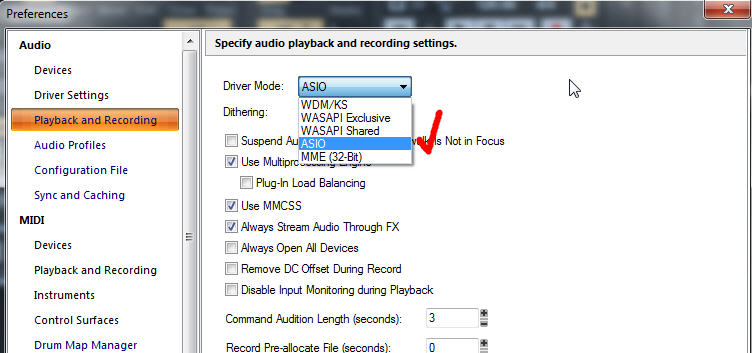

El controlador de audio
El controlador de audio es un programa que gestiona las latencias del programa. Desde el momento que tocas una tecla del controlador MIDI hasta que escuches el evento de audio que es generado por un sintetizador virtual hay un tiempo de demora, a eso denominamos latencia.
Podemos usar:
- El controlador de audio de Windows (MME, WDM, Directx, etc).
- Ventaja: Puedo usar otro programa (Youtube, reproductores de audio, etc) a la vez
- Desventaja: Tengo que ajustar la latencia por ensayo y error.
- El controlador de audio ASIO de un interfaz externo. (En caso que tengas uno)
- Ventaja: Puedo usar otro programa a la vez
- Desventaja: No podré usar otro interfaz, por ejemplo el integrado (Altavoz, auricular, etc)
- Un controlador ASIO genérico: como el ASIO4ALL, que lo obtienes en este enlace
- Ventaja: La latencia es imperceptible.
- Desventaja: No es posible usar más que un solo programa de audio a la vez.
En nuestro caso usaremos el controlador ASIO4ALL.
Para seleccionar el controlador de audio, éste lo puedes hacer accediendo a
Edit \ Preference \ Playback and Recording.
